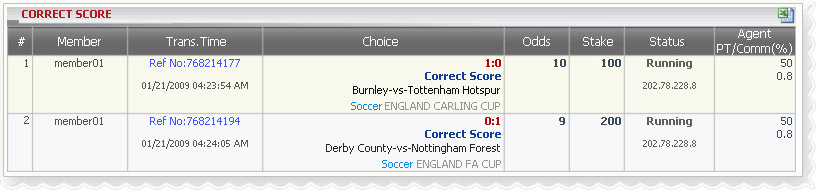

Correct Score
Definition:
Show agent’s win/loss based on position taking for tickets which have bet type: Correct Score. This report is separated by each transaction and contains all detailed information of that transaction.

Correct Score
- In the figure above, we can see the following bet details:
- 1st bet: member account "member01", reference no: 768214177, trans. date: 01/21/2009, bet type: Correct Score, score: 1-0, match: Burnley -vs-Tottenham Hotspur, league: ENGLAND CARLING CUP, odds = 10, stake = 100, agent position = 50%
- 2nd bet: member account "member01", reference no: 768214194, trans. date: 01/21/2009, bet type: Correct Score, score: 0-1, match: Derby Country -vs- Nottingham Forest, league: ENGLAND FA CUP, odds = 9, stake = 200, agent position = 50%